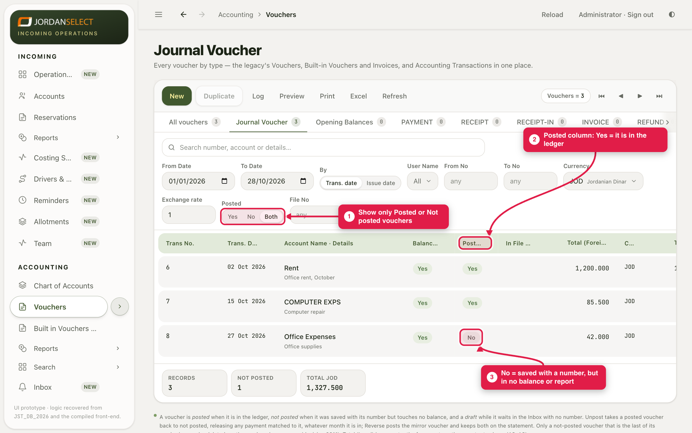
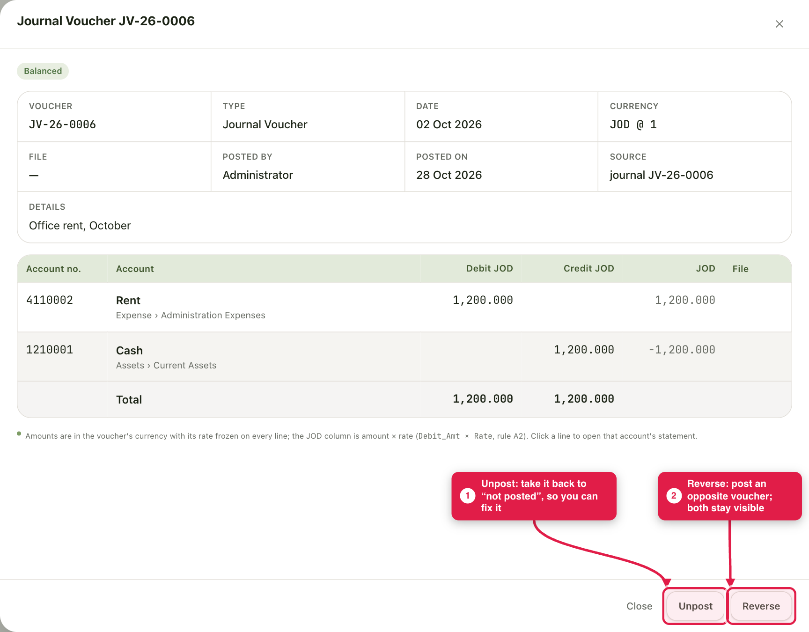
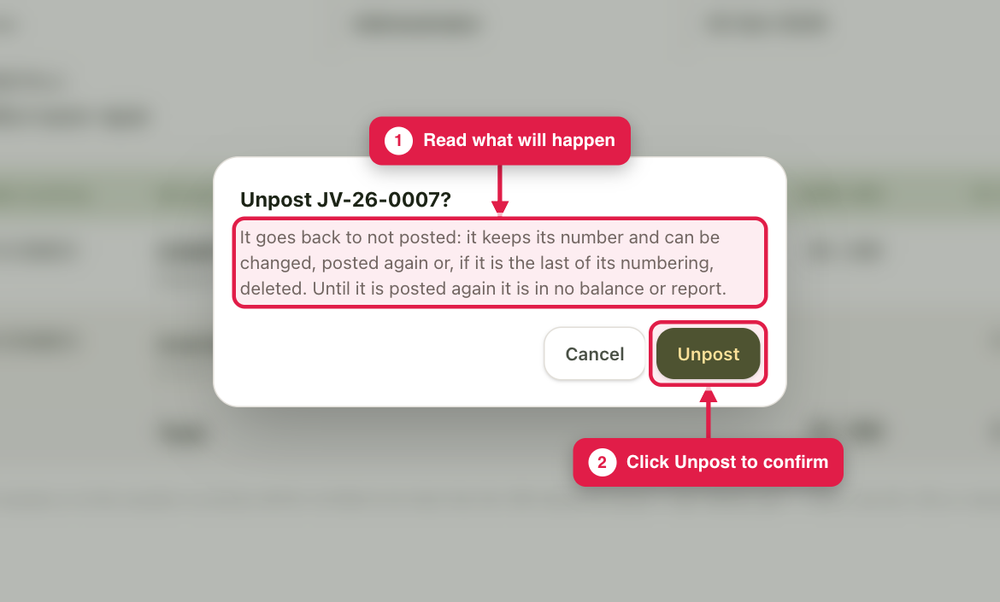
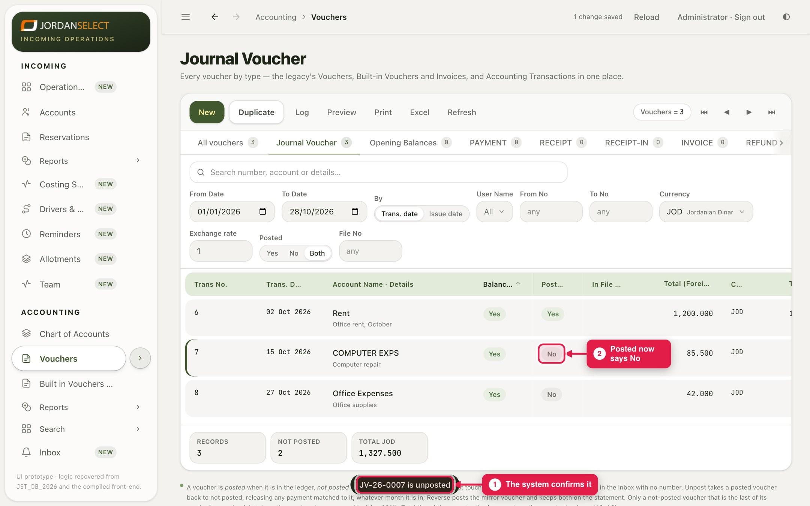
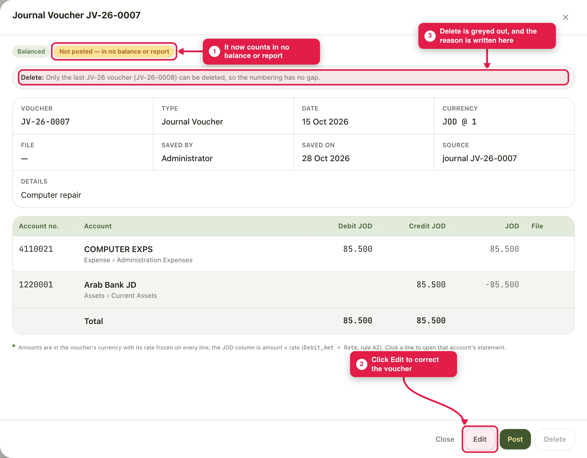
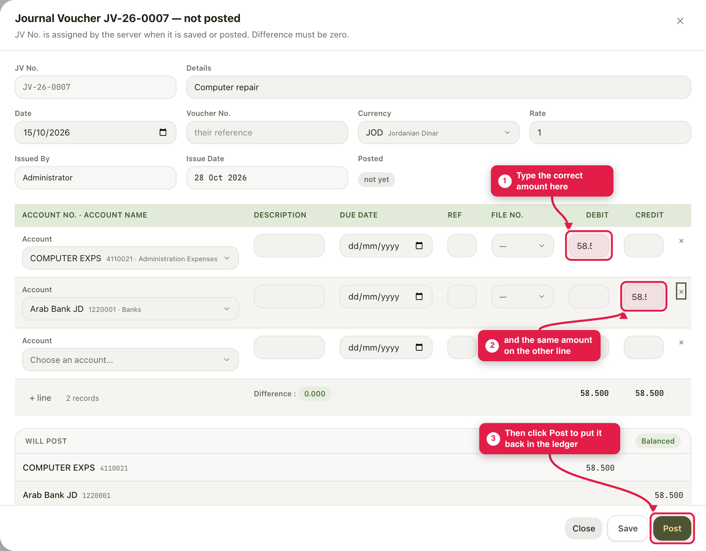
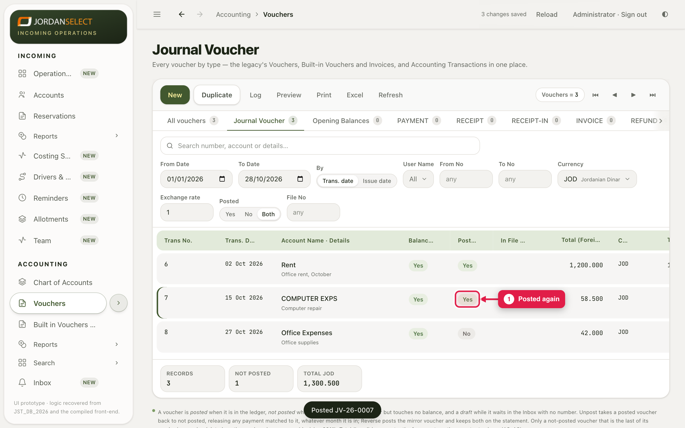
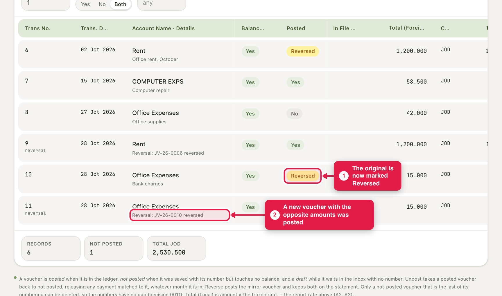

What to click when a voucher is wrong: edit it, take it back, reverse it or delete it.
WhoAccountants
WhereAccounting → Vouchers → click the voucher
Takes2 to 5 minutes
You needThe permission “Unpost or delete a voucher” (the Accountant role has it)
1. First, find out which kind of voucher you have
Open Accounting → Vouchers. Every voucher is in one of three states, and the state decides what you can do.
Draft
In the Inbox
Waiting for approval. It has no number yet and affects no figure.
Not posted
Saved with a number
It has its number but touches no balance and no report.
Posted
In the ledger
It counts in every balance, statement and report.
The list tells you which is which:

The voucher list. Look at the Posted column, or use the Yes / No / Both filter.
A voucher you have already cancelled shows Reversed in the Posted column (see section 5).
To open a voucher, click its row. Its buttons are at the bottom right.
2. Choose what to do
The voucher is…
You want to…
Click
Not posted
Change the amount, date or lines
Edit, then Post
Not posted
Get rid of it completely
Delete (only if it is the last one of its numbering)
Posted
Fix it quietly and post it again
Unpost, Edit, Post
Posted
Cancel it but keep the history on the statement
Reverse
How to choose between Unpost and ReverseUnpost takes the voucher back as if it had not been posted. Use it for a simple typing mistake that has not gone anywhere yet.
Reverse adds a second, opposite voucher, and both stay visible on the statement. Use it when the voucher has already been seen or used, for example sent to the agent or the tax department.
3. Fix a voucher that is already posted
Example: the voucher JV-26-0007, “Computer repair”, was posted for 85.500 but the right amount is 58.500.
1
Click the voucher in the list. It opens at the side. A posted voucher has two buttons: Unpost and Reverse. Click Unpost.

An open, posted voucher. Unpost and Reverse are at the bottom right.
2
A box asks “Unpost JV-26-0007?”. Read what it says, then click Unpost to confirm. Click Cancel if you changed your mind.

The confirmation box.
3
The voucher closes and the system confirms: “JV-26-0007 is unposted”. The Posted column now says No for it, and every figure that included it has changed.

After unposting. The voucher keeps its number.
4
Click the voucher again. It now says “Not posted — in no balance or report” and has the buttons Edit, Post and Delete. Click Edit.

Delete is greyed out here, and the reason is written at the top: only the last voucher of its numbering can be deleted.
5
Type the correct amount on both lines. Difference must show 0.000, or the voucher cannot be posted. Then click Post. (Save keeps it as not posted if you are not ready.)

The edit form. Debit and credit must match.
6
The system says “Posted JV-26-0007” and the list shows Yes again, with the new amount.

Fixed. The list shows 58.500.
If the voucher has payments matched to it
Unposting releases those matches, and the system tells you how many. After you post again, match the payments again.
Unposting in a month that is already closed
It is allowed. The figures for that month will change, and the closing entry is not recalculated. Tell your manager before you do it, and write down what you changed.
4. Delete a voucher
Only a voucher that is Not postedand the last one of its numbering can be deleted. This way the numbers never have a gap: the next voucher simply reuses the number. Open it and click Delete.
Be sure firstA deleted voucher is gone. Only its history in the Log remains. If it is posted, Unpost it first.
5. Reverse a voucher instead
Reverse happens at onceThere is no “Are you sure?” box. As soon as you click Reverse, the opposite voucher is posted. Check you have the right voucher open first.
1
Open the posted voucher and click Reverse.
2
A new voucher is posted with the opposite amounts, and the original is marked Reversed. Both stay on the account statement and cancel each other out.

After reversing JV-26-0010: the original shows Reversed, and JV-26-0011 is the opposite voucher.
To undo a reversal, Unpost the reversing voucher (the one marked “reversal”).
6. If a button is greyed out
The system tells you why, in words, on the voucher. These are the usual reasons:
What it says
What to do
“…is reversed by …. Unpost … first.”
Unpost the reversing voucher it names, then try again.
“…is cancelled by …. Unpost … first.”
Unpost the cancelling credit it names first.
“…was accepted by JoFotara and the tax department holds it. Reverse it instead.”
Click Reverse, then send the correction to the tax department.
“…was sent to JoFotara and the answer is not known…”
Check it in JoFotara and retry before changing anything.
“…is itself a reversal. Unpost it instead.”
A reversal cannot be reversed. Unpost it.
“…is already reversed by ….”
Nothing more to do: it has been reversed already.
“Only the last … voucher (…) can be deleted, so the numbering has no gap.”
Delete the later ones first, or Reverse this one if it is posted.
7. Check your work
Open the voucher and look at its Log. It shows who did Saved, Edited, Posted, Unposted or Deleted, and when.
Open the account’s Statement and check the balance is what you expect.
If you unposted, make sure the voucher is posted again. A voucher left “not posted” counts in no report.
Questions? Ask the finance manager. · Last checked: ____ · Screens shown are from a test copy of the CRM with made-up vouchers.